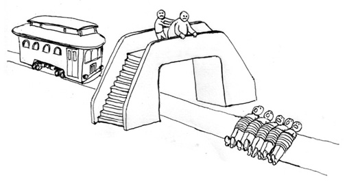
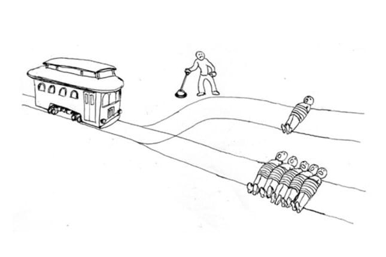

Autonomous cars will certainly be used by many people very soon because approximately 1.35 million people around the world die each year in traffic accidents and the aspirational goal that autonomous vehicles aim to achieve: to reduce the number of traffic accidents produced by human error.
However, is it ethical to produce self-driving cars whose choices will affect the lives of the driver and surroundings? What ethical considerations should be taken into account when implementing decision-making algorithms and what ethical framework would be the best for self-driving cars?
One of the main challenges for autonomous vehicles is centered around how they value human life. The questions that concern the public and engineers are whether autonomous vehicles are smart enough to calculate the value of one human life over another and how those decision calculations will be made. If a self-driving car makes a mistake, it could directly lead to the loss of life.
Trolley Problem, where someone is presented with two situations that present nominally similar choices and potential consequences, demonstrates the dilemma between killing five people and one person. In situation A, a runaway trolley is driving down a track and will run into and kill five workmen saving the life of one workman by flipping a switch and diverting the trains down a sidetrack.

Situation A - “Switch”
In situation B, the observer has to decide whether he wants to kill five people or push a rather large and plump individual off off the bridge onto the tracks below, thereby stopping the train and saving the five lives.

Situation B - “Bridge”
When given two options to kill one or five, an ethical conflict arises. Under the utilitarian approach, our decisions should lead to the greatest good for the greatest number of people. In contrast, a refusal to sacrifice the one to save five would be an ethical stand reflecting Kant’s principle that individuals are ends in themselves and not means to the ends of others.
There is another theoretical situation that dives into potential moral considerations for self-driving cars - The Tunnel Problem. Let’s imagine you are traveling along a single-lane road in a self-driving car that is approaching a narrow tunnel. You are the only passenger. There is a kid who attempts to run across the road and trips in the center of the lane, blocking the entrance to the tunnel right before you enter the tunnel. The car has only two options: continue straight, thereby hitting and killing the child, or swerve, thereby colliding into the wall on either side of the tunnel and killing you.
Some people argue that going straight and killing a child can be justified by the fact that it’s the child’s fault for being at the unsafe location. However, those with kids will tell you how hard it is to always watch over your child and make sure s/he is not at the wrong place at the wrong time. Also, if the cars don’t always prioritize the passenger’s safety over the safety of others, what is the point of buying a self-driving car? Others believe that since the passenger is an adult and riding inside a car, they will have higher chances of survival, while children don’t. There are multiple reasons behind choosing a child’s life over the passenger’s and vice versa. Therefore, engineers and the public should have a consensus on who to kill in such critical situations.